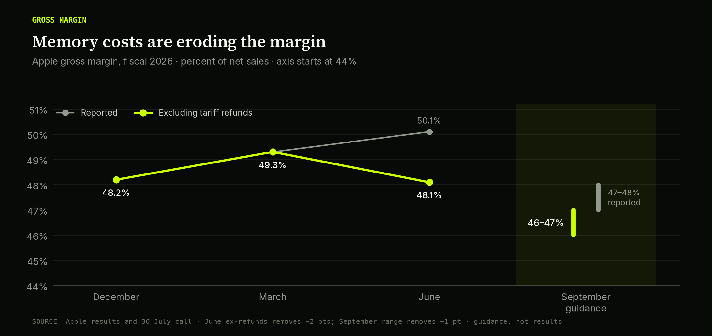
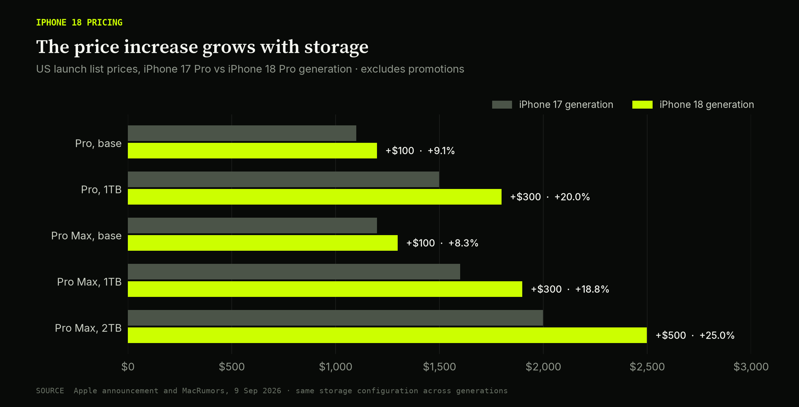
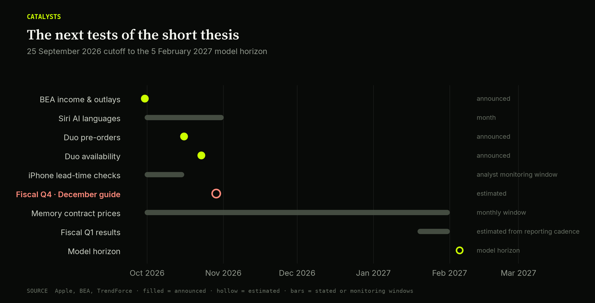
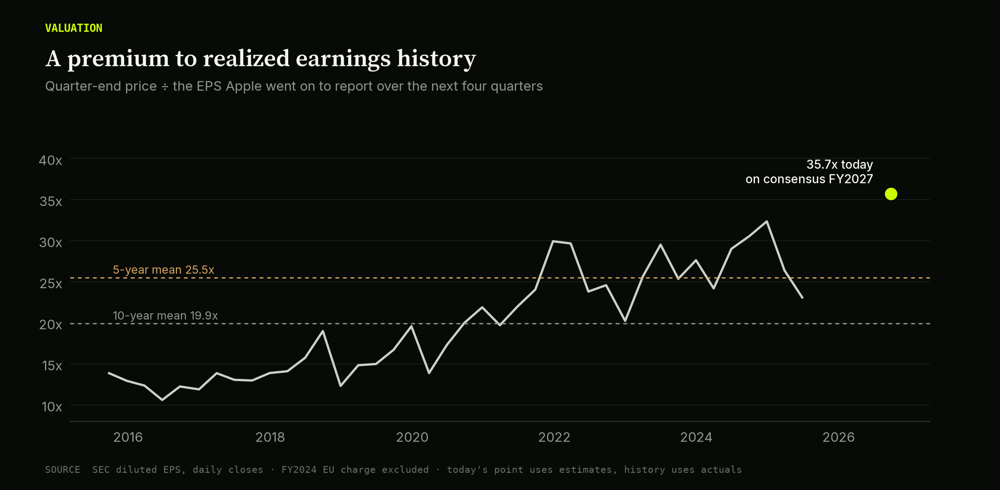
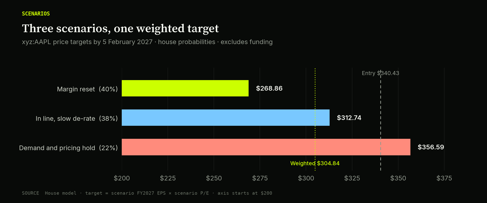
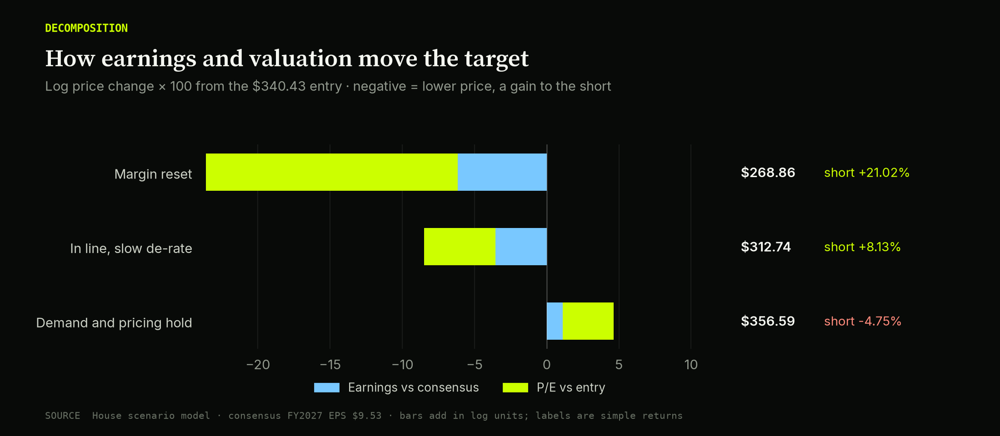

Apple (AAPL): The Hundred-Year Flood Meets a 35x Multiple
CORBANU · TRADE NOTE · 27 SEPTEMBER 2026
The trade
SHORT Apple (AAPL) through the xyz:AAPL perpetual on Hyperliquid from a reference entry of $340.43 (USD, Hyperliquid public snapshot at 2026-09-27 21:27 UTC; a reference price, not an executed fill), over a horizon to February 5, 2027, just after Apple's fiscal first-quarter report. The shares trade at 35.7x consensus FY2027 earnings while Apple's own guidance shows memory costs pulling gross margin lower and rising again after September; the fiscal fourth-quarter report expected in late October, with its December-quarter margin guide, is the catalyst, and the thesis ends if Apple guides December-quarter gross margin at or above about 48% excluding one-time refunds or discloses supply terms that cap its memory costs.
Probability-weighted target: $304.84 by 2027-02-05, a 10.45% decline from the reference entry. This weighted figure blends three scenario targets; it is not itself a scenario. Scenario price targets: Margin reset $268.86 (40%); In line, slow de-rate $312.74 (38%); Demand and pricing hold $356.59 (22%).
SHORT xyz:AAPL · hyperliquid · reference entry 340.43 USD · as of 2026-09-27T21:27:41Z · horizon 2027-02-05.
The exposure
Apple sells iPhones, Macs, iPads and wearables, and collects Services revenue (App Store commissions, iCloud, licensing, subscriptions) from an installed base that management puts above 2.5 billion active devices. In the June 2026 quarter iPhone brought in $54.3 billion of $109.4 billion revenue (+22%), Mac $10.4 billion (+29%), iPad $6.2 billion (−6%) and Services $30.7 billion (+12%) (Apple fiscal Q3 2026 results). Hardware is about 72% of sales and earned a 40.1% gross margin (including refunds); Services, at 75.6%, is 28% of sales but about 42% of gross profit. Component costs, especially memory, set the margin on most of what Apple sells. The Services annuity is a large part of why investors pay a premium multiple.
The instrument is a perpetual future: a cash-settled contract with no expiry, held close to the underlying price by periodic funding payments between longs and shorts. The saved native market snapshot identifies xyz:AAPL as the Apple contract. This report expresses its targets as USD prices for one-share-equivalent exposure. trade[XYZ] deploys perpetual markets on Hyperliquid. Funding, contract pricing outside the underlying cash-market session and liquidation mechanics distinguish this instrument from borrowed Nasdaq shares. The venue's detailed specification pages could not be independently retrieved during final verification; leverage, exact session boundaries and dividend adjustments are therefore not assumed here.
This is derivative exposure, not ownership of Apple shares. The scenario targets measure price returns and exclude funding. The retrieved evidence did not establish the venue's exact treatment of dividends or corporate actions, so the report makes no assumption about those adjustments. A borrowed-share short carries stock-borrow costs and dividend obligations; the perpetual instead has variable funding. Positive signed funding means this short receives it. Over the trailing 90 days shorts paid 0.93% APR; over 30 days they received 0.58% and over 7 days 5.67% (see the funding box).
Why now
A guide that names its culprit
On July 30 Apple guided September-quarter revenue growth to 9–11%, down from 16–17% in the first three fiscal quarters, and gross margin to 47–48% including about one point of one-time tariff-refund benefit (call transcript). The June quarter's reported 50.1% already contained about two points of refunds, so the underlying path runs from a record 49.3% in March to 48.1% in June and about 46.5% at the September guide midpoint. CFO Kevan Parekh attributed more than 100% of both declines, 120 and then 160 basis points, to memory. Cheaper non-memory components, favorable mix and memory bought earlier at lower prices ("carry-in" inventory) partly offset the hit.
On his last call as CEO, Tim Cook said Apple expected higher memory costs in September, a declining benefit from older inventory afterward, and further increases in market prices. He called it "a hundred-year flood on the memory pricing" (call transcript). Management disclosed no long-term supply agreement in response to Morgan Stanley analyst Erik Woodring's question.
Apple expects the benefit of cheaper carry-in inventory to diminish beyond September; it has not said exactly when that benefit disappears. That makes the December-quarter margin guidance in late October the next test of how quickly higher contract prices reach earnings.

Apple gross margin, reported and excluding one-time tariff refunds, fiscal 2026. September is Apple's guidance range. The December-guide research thresholds are discussed in the text. Chart data.
The contract market behind the invoice
Memory prices are set in quarterly contracts between the three DRAM suppliers and device makers, and AI data centers have outbid phones for capacity. TrendForce's survey put conventional DRAM contract prices up 93–98% quarter on quarter in the first quarter of 2026 (TrendForce, June 1), and its 31 March forecast called for another 58–63% in the second, with NAND flash up 70–75% (TrendForce, March 31). For the third quarter TrendForce forecast smaller increases, 13–18% for conventional DRAM and 10–15% for NAND (TrendForce, July 3). It added that US cloud providers' multi-year agreements now cap their server-DRAM prices, so further increases fall mainly on buyers without such agreements (TrendForce, July 9). On September 23 TrendForce raised its fourth-quarter DRAM outlook and warned that early buying in 2026 would tighten 2027 (TrendForce DRAM research).
Morningstar estimated in June that memory had been about 10% of an iPhone's bill of materials and that the inflation could lift the cost of building one by 20% or more (Morningstar, June 18). Jefferies' Edison Lee estimated iPhone gross margin could fall from 38% to 34.5% in the second half of 2026 even after price increases (Yahoo Finance). Apple has not disclosed a long-term agreement that caps its memory cost. That alone does not prove it has none, but its own guidance behaves as if it pays close to market: management attributed more than the whole of two consecutive underlying margin declines to memory and expects costs to keep rising.
Pricing that chases the invoice
Apple is passing costs through, but in steps that trail the bill. On June 25 it raised prices across Macs and iPads: MacBook Air from $1,099 to $1,299, MacBook Pro from $1,699 to $1,999, Mac Studio (M3 Ultra) from $3,999 to $5,299, iPad Pro from $999 to $1,199, with iPhone left unchanged (MacRumors). Cook said Apple raised prices "reluctantly," and told analysts it was too early to judge the elasticity of the Mac and iPad increases.
The September iPhone cycle continued the pattern. The iPhone 18 Pro and Pro Max start at $1,199 and $1,299, $100 above last year, with a variable-aperture main camera, a smaller Dynamic Island and the A20 Pro chip as the main changes (Apple). The increases grow with storage: +$300 at 1TB and +$500 for the 2TB Pro Max, now $2,499 (MacRumors). The base increase, about 8–9%, came in below the $150–300 some forecasters had modeled (MacRumors). Apple is protecting its volume-selling configurations and pricing memory where memory-heavy buyers pay. Whatever the base price does not recover, gross margin absorbs.

US list prices by configuration. Increases rise from about 8–9% at base storage to 25% at 2TB. Chart data.
The Mac is Apple's best hardware story and is memory-bound twice over. Revenue rose 29% in June, and on the call Cook described Mac mini demand from users running AI agents and Mac Studio clusters running large models locally. Unified memory is what makes those machines good at local AI, and it is also the component whose cost is rising fastest. At under 10% of revenue, the Mac cannot offset iPhone margin.
The foldable brings more revenue at uncertain margin. The iPhone Duo, Apple's first foldable, opens to a 7.6-inch display, costs $1,999 for 256GB to $3,199 for 2TB, and uses two 48MP rear cameras with no dedicated telephoto. Pre-orders open October 16 and it ships October 23 (Apple; AT&T listing). TrendForce expects about 5 million units in 2026, a 24.8% share of a 20.2-million-unit foldable market, tied with Huawei behind Samsung (TrendForce, September 10). At an illustrative $2,200 average price that is roughly $11 billion, about 2% of our FY2027 revenue. It adds revenue, but two displays, a titanium hinge and storage tiers up to 2TB are costly to build, and Apple does not report the Duo's margin. The Duo changes the revenue line more than the margin argument.
What the price assumes
Shares fell about 7% to roughly $309 after the July guide (TIKR), then recovered to $341.07 at the September 25 close, 1.2% below the $345.34 52-week high and up 33.5% over one year (Bloomberg). Consensus expects FY2026 EPS of $8.81 and FY2027 EPS of $9.53, 8.2% growth. FY2027 revisions over the 30 days to September 4 ran 8 up and 19 down (Yahoo Finance), and the December quarter's EPS growth is pencilled at 1.4% (Yahoo Finance analysis). The aggregate analyst price target of $334.24 is 1.8% below the reference entry (Public): the average analyst already sees no upside.
We infer the market's margin expectations from its earnings estimates and valuation. The Street's December-quarter EPS estimate implies margins already below last year's, but nothing we found shows a consensus that December margin falls beyond September's underlying ~46.5%. A 35.2x multiple on $9.53 is consistent with a market that treats the September guide as the trough and expects pricing to catch up by early 2027. The thesis needs one step more: a December guide at or below about 46% excluding refunds. That would confirm the decline continues after carry-in fades and would pull FY2027 estimates toward our $9.20.
Demand holds, costs rise
The model assumes resilient demand. iPhone revenue grew 22% in June, and Cook said pull-forward was "not obvious in the data." Early iPhone 18 Pro signals are ambiguous: JPMorgan's first-week tracking showed home-delivery lead times of 7 and 19 days for the Pro and Pro Max versus 15 and 24 for last year's models (Yahoo Finance). Shorter waits mean either softer demand or better supply, and the bank flagged SKU-mix effects and buyers waiting for the Duo. Carriers are working hard to hold demand, with T-Mobile offering up to $1,200 off on 36-month financing (T-Mobile). Consumer finances also limit pricing power: the US saving rate was 3.0% in July, goods spending fell $49.9 billion, and PCE inflation ran 3.7% headline and 3.3% core year on year (BEA). Apple is raising prices into a thin savings cushion, which limits how much more pass-through the next round can carry.
Renting the intelligence layer
The platform argument works through the multiple rather than FY2027 earnings. At 35.7x, Apple trades about ten turns above its own five-year average on realized forward earnings (see the valuation section). That premium is a bet that the ecosystem keeps collecting rent as computing moves to AI agents and new devices, and the evidence points the other way.
On January 12 Apple and Google confirmed a multi-year collaboration under which Gemini models and Google cloud technology underpin the next generation of Apple Foundation Models (CNBC). Bloomberg reported the cost at about $1 billion a year, which Apple has not confirmed (Bloomberg). Siri AI shipped with iOS 27 on September 14 as an English-only, waitlisted beta, with more languages promised for October (Apple). AI chief John Giannandrea stepped down and retired this spring, and model work now reports through software chief Craig Federighi under new vice president of AI Amar Subramanya (Apple).
The next device category is moving the same way. Vision Pro shipped about 390,000 units in 2024 per IDC, and production was reportedly cut (The Guardian). On September 23 Meta announced roughly 100-gram VR Glasses at $1,299.99 for spring 2027 (Meta), two weeks after launching its Muse personal agent with glasses support to follow (Meta).
John Ternus, Apple's hardware engineering chief, became CEO on September 1 with Cook as executive chairman (Apple). Apple's largest gaps are in models and agents, not hardware, and the October call will give his team's first guide. If Apple licenses the model layer while the agent-and-glasses interface forms elsewhere, the premium has less to rest on. Each turn of multiple is worth about $9.20 a share, 2.7% of the entry, on our FY2027 EPS. The spread between the 30x and 37x scenarios is where this evidence acts.
Catalyst calendar

Announced dates are solid; estimated dates and monitoring windows are hollow or shaded. Chart data.
- September 30, 2026: BEA August personal income and outlays, with the annual revision. Watch the saving rate (3.0% in July) and real goods spending. The revision can restate the July figures behind the consumer backdrop (BEA).
- October 2026 (Apple's stated timing): Siri AI languages beyond English. A signal of how quickly the Gemini-based assistant moves from beta to product (Apple).
- October 16 and 23, 2026: iPhone Duo pre-orders and availability, with 28 further markets on October 30 (Apple). Delivery estimates are the first observable read on foldable demand against TrendForce's 5-million-unit forecast.
- Early to mid-October 2026 (our monitoring window): iPhone 18 Pro lead-time and carrier reads. Whether the broker trackers converge tells us about the revenue side, not the margin mechanism.
- Late October 2026 (estimated; Apple had not announced the date at cutoff): fiscal Q4 FY2026 results. Third-party calendars estimate October 29 (Wall Street Horizon). This is the decisive print: September-quarter gross margin against the 47–48% guide, and above all the December-quarter guide excluding refunds. At or below about 46% supports the margin-reset case; 46–47% fits the in-line case; 48% or higher breaks the mechanism.
- Monthly, October 2026 to January 2027: TrendForce DRAM and NAND contract-price updates. Further increases for the fourth quarter and early 2027 lengthen the squeeze; consecutive declines would signal rollover.
- Late January 2027 (estimated from Apple's reporting cadence): fiscal Q1 FY2027 results. The first reported quarter after the carry-in benefit fades. The modeled horizon runs to February 5, 2027 to capture the repricing.
Fundamental invalidation
The mechanism: memory costs Apple cannot fully pass through compress gross margin into the December quarter, cutting FY2027 estimates and de-rating a 35x forward multiple. These developments would break it:
- December-quarter gross margin guided at or above about 48% excluding refunds, or a September quarter well above guide on the memory line. Either would show pricing and mix covering the shock, which removes the estimate cut.
- Disclosure of long-term memory agreements or sourcing terms that cap Apple's cost increases, like the caps cloud providers already hold (TrendForce, July 9). The flood would then not reach Apple's cost of goods.
- TrendForce contract prices falling in consecutive monthly updates before the December quarter is costed. A supply response that early limits the squeeze to one quarter the market has already digested.
- Services growth reaccelerating well above the June quarter's 12%, which would lift group margin through mix and support the multiple regardless of memory.
- A credible first-party Apple frontier model, or a dated glasses launch, which would remove the platform case for a lower multiple even if hardware margins stay under pressure.
When to add
These are research conditions that would strengthen the case. They are not portfolio instructions.
- Fiscal Q4 guides December-quarter gross margin at or below about 46% excluding refunds, confirming that faded carry-in exposes Apple to market memory prices, while FY2027 consensus revisions stay net negative.
- TrendForce raises its fourth-quarter 2026 or first-quarter 2027 contract-price outlook again, extending the squeeze past one quarter.
- Observable weakness in iPhone 18 Pro or Duo sell-through, such as collapsing delivery windows alongside heavier carrier promotion, which would add a revenue leg to a thesis now carried by margin.
More exposure remains attractive while the shares trade at or above roughly 34x consensus FY2027 EPS, about $324. At that level the in-line target of $312.74 still sits below the price. A rally on unchanged fundamentals meets the condition. A decline toward the 30x margin-reset multiple does not, and a sympathetic sell-off on macro or Meta headlines is not fundamental confirmation.
Valuation and model
Multiples in this section and the scenario table are price divided by FY2027 EPS (fiscal year ending September 2027), the forward year the market will quote at the February 2027 horizon. Money is USD billions; shares are billions of diluted shares.
At the September 25 close of $341.07 (Bloomberg) the shares trade at 35.8x consensus FY2027 EPS; Yahoo's September 24 snapshot showed trailing EPS of $8.73, trailing revenue of $466.82 billion and a market value of $4.92 trillion (Yahoo Finance). On our basis the $340.43 entry is 35.7x consensus FY2027 EPS of $9.53 and 37.0x our FY2027 EPS of $9.20.
Multiple multiples
Apple's forward-multiple history is usually quoted from a single secondary figure, so we rebuilt it. For every fiscal quarter-end from September 2015 to June 2025 we divided the closing price by the diluted EPS Apple went on to report over the following four quarters. That is a realized forward P/E: it uses the earnings that actually arrived rather than the estimates of the day, and it runs somewhat below consensus-based multiples when Apple beats (SEC company financial data; split-adjusted; the FY2024 one-time EU State Aid tax charge excluded). Over ten years (40 quarter-ends) it averaged 19.9x, with a median of 19.6x and a range of 10.6x to 32.4x. Over five years (20 quarter-ends) it averaged 25.5x, with a range of 19.7x to 32.4x. Only two of those twenty readings reached 30x, and none reached 34x. Trailing multiples tell the same story: FullRatio puts the current trailing P/E at 38.5x against a ten-year mean near 25x and a five-year mean of 30.1x (FullRatio). The last year's gain came from a higher multiple more than from higher earnings.

Quarter-end price divided by the EPS Apple went on to report over the next four quarters. The current point uses consensus FY2027 EPS, a different basis. Chart data.
FY2026 is almost complete. The first three quarters reported revenue of $143.8 billion (+16%) with EPS of $2.84 (Apple), $111.2 billion (+17%) with EPS of $2.01 (Apple), and $109.4 billion (+16%) with EPS of $2.02, of which $0.11 was one-time refunds (Apple). A September quarter at the midpoint of the 9–11% guide gives FY2026 revenue of about $477 billion. We take consensus FY2026 EPS of $8.81 as the house figure because most of it is already reported. That implies a 27.2% net margin on 14.75 billion average diluted shares.
We model FY2027 revenue of $505 billion (+5.9%) and 14.45 billion diluted shares, 2.0% fewer after continued buybacks under the $100 billion authorization, for EPS of $9.20. Consensus is $9.53, so the house view is a 3.5% cut, concentrated in the December and March quarters, when memory flows through without full pass-through. Installed-base Services growth and buybacks still deliver 4.4% EPS growth. The negative margin surprise is the incremental catalyst, and the change in multiple drives more of the target than the change in earnings.
Apple's reported FY2026 quarters turned 82.9% of operating income into net income (82.4–83.5% by quarter; tax near 17.6%, other income close to zero) (SEC company financial data). Applied to the September quarter, that puts FY2026 operating profit at about $156.7 billion, a 32.8% operating margin. Holding the same conversion, our $9.20 needs FY2027 operating profit of about $160.3 billion, a 31.7% margin, 1.1 points lower. Consensus $9.53 needs about $166.1 billion, a 32.9% margin, flat on FY2026. The whole house cut is therefore at the operating line: consensus assumes pricing and mix fully absorb memory, and we assume they absorb all but about 1.2 points of margin.
In the margin-reset case the multiple settles at 30x, still about four and a half turns above the five-year realized-forward average, a market that trims rather than abandons the premium. The in-line case uses 34x, about 1.7 turns below entry, for a modest cut and a smaller premium. The upside case uses 37x, which would take the shares through the 52-week high if memory relief and pricing power both arrive. These proposed assumptions use Apple's recent valuation range as a reference. Morningstar, which sees pricing-led double-digit growth in FY2027, still puts fair value at $290 (Morningstar).
| Period ending | Basis | Revenue | Growth % | Operating profit | Margin % | Net income | Shares | EPS |
|---|---|---|---|---|---|---|---|---|
| 2026-09-26 | house | 477.10 | 14.77 | 156.70 | 32.84 | 129.90 | 14.75 | 8.81 |
| 2027-09-25 | house | 505.00 | 5.85 | 160.30 | 31.74 | 132.90 | 14.45 | 9.20 |
Currency: USD. Revenue and profit in billions; shares in billions; EPS in USD per share.

Scenario price targets in USD per contract (one Apple share) through 2027-02-05. Labels show house probabilities, and the dashed line marks the $340.43 reference entry. Each target is scenario FY2027 EPS times the scenario multiple; the probability-weighted target is $304.84. Targets exclude funding. Valuation assumptions and calculations.
Scenarios
All three scenarios share the horizon of February 5, 2027, just after the fiscal Q1 FY2027 report, and value the shares on FY2027 EPS. Each target is revenue times net margin, divided by 14.45 billion diluted shares, times the FY2027 multiple. Odds sum to 100%.
Margin reset (40%). Fiscal Q4 guides December-quarter gross margin at or below about 46% excluding refunds as TrendForce's raised fourth-quarter outlook reaches Apple's cost of goods, and FY2027 consensus falls toward $9.00. Revenue growth slows to about 5% as price increases offset flat-to-lower units. EPS of $8.96 is 6.0% below consensus. The multiple falls to 30x, a 16.0% compression, and supplies about 74% of the price move. The 40% weight rests on the fact that management itself has forecast rising memory costs and fading inventory offsets beyond September, and on TrendForce raising rather than cutting its fourth-quarter outlook on September 23.
In line, slow de-rate (38%). The September quarter lands within guidance, the December guide sits near 46–47% excluding refunds, and demand holds on carrier subsidies and the Duo launch. EPS settles at our $9.20, 3.5% below consensus, and the multiple compresses to 34x as growth settles in mid-single digits; the multiple supplies about 58% of the move. This case carries nearly as much weight as the reset because the stock has already shown it can look through a disclosed margin warning, and resilient revenue limits how far estimates fall.
Demand and pricing hold (22%). Memory increases slow faster than TrendForce projects, Apple absorbs less than feared through mix and negotiated terms, iPhone 18 and Duo sell-through match the iPhone 17 cycle, and Services reaccelerates. EPS reaches $9.64 with net margin flat to FY2026, and the multiple expands to 37x, above the $345.34 high. The weight reflects strong reported demand, demonstrated pricing power and a $100 billion buyback, set against the difficulty of holding margins while management guides costs higher.
Horizon: 2027-02-05. Probabilities are our estimates, proposed assumptions rather than observed odds.
| Scenario | Probability % | Catalyst outcome | Valuation driver | Revenue | Net margin % | EPS | P/E | Target price | Trade price return % |
|---|---|---|---|---|---|---|---|---|---|
| Margin reset | 40.00 | Fiscal Q4 guides December-quarter gross margin at or below ~46% ex-refunds as carry-in inventory fades and TrendForce's raised 4Q26 memory outlook flows into cost of goods; FY2027 consensus cut toward $9.00. | Net margin down ~1.3 points from FY2026 on incomplete memory pass-through; multiple compresses to 30x FY2027 EPS, still above Apple's five-year realized-forward average of about 25.5x, as growth decelerates. | 500.00 | 25.90 | 8.96 | 30.00 | 268.86 | 21.02 |
| In line, slow de-rate | 38.00 | September quarter within guidance; December-quarter gross margin guided ~46–47% ex-refunds; demand holds on carrier subsidies and the Duo launch; FY2027 EPS drifts to ~$9.20. | Modest estimate cut (consensus $9.53 to $9.20) plus multiple compression to 34x as EPS growth settles in mid-single digits. | 505.00 | 26.32 | 9.20 | 34.00 | 312.74 | 8.13 |
| Demand and pricing hold | 22.00 | Memory increases decelerate faster than projected, Apple secures better terms, iPhone 18 and Duo sell-through match the iPhone 17 cycle, Services reaccelerates; margins flat to FY2026. | EPS reaches ~$9.64 on flat margins and 7% revenue growth; multiple expands to 37x, carrying the shares through the $345.34 high. | 512.00 | 27.20 | 9.64 | 37.00 | 356.59 | (4.75) |
Probability-weighted price return: 10.45%, before carry.
The weighted target of $304.84 is 10.45% below the $340.43 entry, price-only and before funding. Two of the three scenarios end below entry. In the reset case the multiple does most of the work; in the in-line case the multiple supplies about 58% of the move.

Earnings change versus multiple change behind each scenario target, measured from the $340.43 entry at 35.7x consensus FY2027 EPS. Chart data.
Funding
SHORT xyz:AAPL · as of 2026-09-27T21:27:41Z
| Basis | Window | Signed APR % | Funding return % | Coverage |
|---|---|---|---|---|
| Historical | 7 days | +5.67 | +0.109 | 100.0% |
| Historical | 30 days | +0.58 | +0.048 | 100.0% |
| Historical | 90 days | -0.93 | -0.228 | 100.0% |
| Current hourly rate | annualized | +5.47 | n/a | receives |
Positive means this trade receives funding; negative means it pays. Historical results assume constant notional. APR is not APY. The current rate can change every hour and is not a forecast for the horizon. Price scenarios exclude funding. Full funding evidence.
At constant initial notional, funding of -29.13% APR through 2027-02-05 would offset the modeled price return, before fees. If the historical 90-day funding rate persisted, price plus funding would be +10.12%, before fees. This is a sensitivity, not a funding forecast.
Sources
- Apple: fiscal Q1 2026 results
- Apple: fiscal Q2 2026 results
- Apple: fiscal Q3 2026 results
- Six Colors: full transcript of Apple's fiscal Q3 2026 call
- Yahoo Finance: Apple fiscal Q3 2026 earnings call
- Apple: iPhone 18 Pro and iPhone 18 Pro Max announcement
- Apple: iPhone Duo announcement
- AT&T: iPhone Duo storage tiers and prices
- Apple: Tim Cook to become executive chairman, John Ternus CEO
- Apple: John Giannandrea to retire
- SEC: Apple company financial data (diluted EPS history)
- trade[XYZ]: perpetual specification index
- TrendForce: 1Q26 DRAM contract prices
- TrendForce: 2Q26 memory contract price forecast
- TrendForce: 3Q26 memory contract prices and long-term agreements
- TrendForce: DRAM research and fourth-quarter outlook
- TrendForce: iPhone Duo foldable share forecast
- BEA: personal income and outlays, July 2026
- BEA: personal saving rate
- CNBC: Apple and Google Gemini collaboration
- Bloomberg: Apple's planned use of Google's Gemini model
- Meta: Connect 2026 announcements
- Meta: introducing Muse
- The Guardian: Vision Pro production cut
- T-Mobile: iPhone 18 Pro and iPhone Duo launch offers
- MacRumors: June 2026 Mac and iPad price increases
- MacRumors: iPhone 18 Pro storage-tier prices
- MacRumors: iPhone 18 Pro increase versus forecasts
- Morningstar: memory inflation and iPhone cost
- Morningstar: Apple after the iPhone Duo launch
- Yahoo Finance: Apple key statistics
- Yahoo Finance: Apple analyst estimates
- Yahoo Finance: consensus and revision counts
- Yahoo Finance: JPMorgan iPhone 18 Pro lead times
- Yahoo Finance: Jefferies iPhone margin estimate
- Public: aggregate analyst price target
- FullRatio: Apple P/E history
- TIKR: post-earnings share move
- Wall Street Horizon: Apple earnings calendar estimate
Corbanu · Trade note · 27 September 2026